CS184/284A Fall 2026 Homework 3 Write-Up
Link to webpage: HW3 Write-up
Link to GitHub repository: HW3 Code Repository
Overview
Give a high-level overview of what you implemented in this homework. Think about what you've built as a whole. Share your thoughts on what interesting things you've learned from completing the homework.Part 1: Ray Generation and Scene Intersection
Ray Generation
Ray generation allows the renderer to sample each pixel's color, taking into account factors such as lighting, shadows, and visibility by using rays and tracing them in the 3D scene. Rays are generated starting at the camera / eye (origin) and shoot toward a pixel on the image plane, defining the direction of the ray. The ray at the origin represents time \(t = 0\), with time increasing along the ray infinitely. More generally, each point on the ray is defined by \(r(t) = o + td\), where \(o\) is the origin, \(d\) is the direction, and \(t\) is the time.
Primitive Intersection
Eventually, the ray may hit a primitive shape. From earlier, a ray can be defined by the equation \(r(t) = o + td\). A ray intersection on a primitive shape is defined as the time \(t\) where the ray point \(r(t)\) is the same as a point on the surface of the shape. More generally, a surface can be defined by points \(p\) that satisfy some function \(f(p) = 0\). A ray intersection occurs at point \(p = o + td\) such that \(f(o + td) = 0\) at time \(t\).
Triangle Intersection Algorithm
My implementation of ray-triangle intersections uses the Möller Trumbore algorithm to compute the results directly.
We can use the fact that the intersection point will be equal to some barycentric coordinate \((b_1, b_2, b_3)\) of the three triangle points \((p_1, p_2, p_3)\).
This is represented as the equation:
$$
\begin{align}
o + td &= b_1p_1 + b_2p_2 + b_3p_3 \\
o + td &= (1 - b_2 - b_3)p_1 + b_2p_2 + b_3p_3
\end{align}
$$
From the equation above, we can construct the matrix equation as shown in lecture:
$$
\begin{bmatrix}
t \\
b_2 \\
b_3
\end{bmatrix}
=
\frac{1}{s_1 \cdot e_1}
\begin{bmatrix}
s_2 \cdot e_2 \\
s_1 \cdot s \\
s_2 \cdot d
\end{bmatrix}
\quad
\text{where}
\quad
\begin{matrix}
e_1 = p_2 - p_1 \\
e_2 = p_3 - p_1 \\
s = o - p_1 \\
s_1 = d \times e_2 \\
s_2 = s \times e_1
\end{matrix}
$$
After computing the result vector, I perform checks such as whether \(t \geq 0\) and falls within range of the
given \(t_{min}\) and \(t_{max}\) variables and whether the barycentric coordinates \((b_1, b_2, b_3)\) are all positive.
I update \(t_{max}\) if all the checks pass before updating the Intersection struct (for Triangle::intersect).
We can calculate the normal \(n\) using the barycentric coordinates \((b_1, b_2, b_3)\) on the three given normals and update
everything else according to the instructions on the assignment.
|
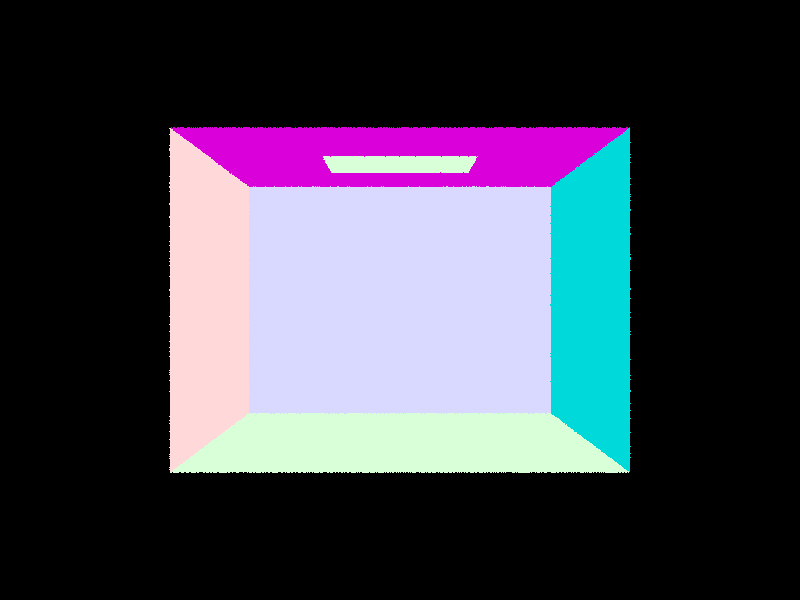 |

|
|
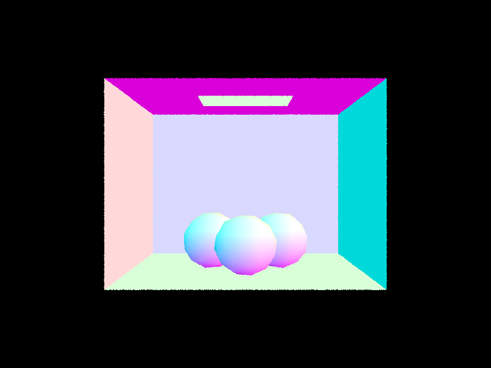 |
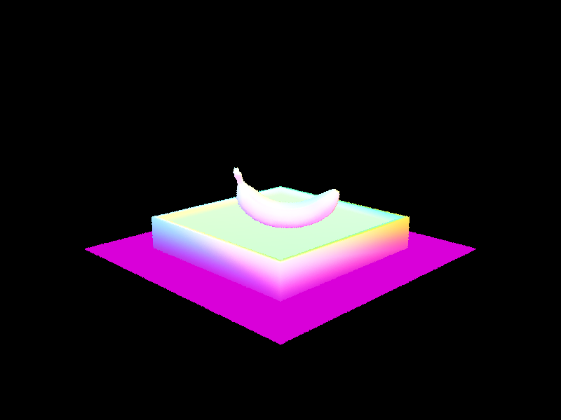 |
Part 2: Bounding Volume Hierarchy
BVH Construction
My implementation of BVH construction starts with finding the bounding box that covers all the
primitives for the current node we are constructing. This is given by the starter code, which iterates through
the primitives using start and end and expands the node's bounding box as it gets each primitive's
bounding box. In addition, I track the total number of primitives in this first iteration.
The BVHNode is intitialized using the bounding box and we check whether the node we are constructing is a leaf
node by checking if the total number of primitives is greater than the max leaf size. If it is a leaf,
we simply set the node's start and end to the given iterators.
For nodes that are not leaves, I chose to split using the median primitive. The sorting order that
decides this median is based on the centroids of each primitive along the x, y, or z axis, with
the choice of axis being random. After finding the median primitive, we construct the left and right nodes
recursively and assign them to the current node's l and r fields.
In either case (leaf or not), once we've constructed the node, we return it.
|
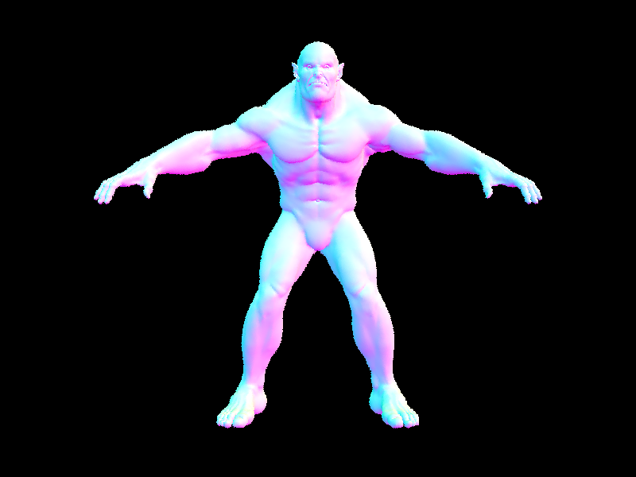 |
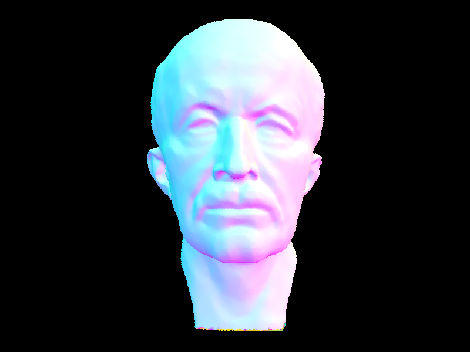 |
|
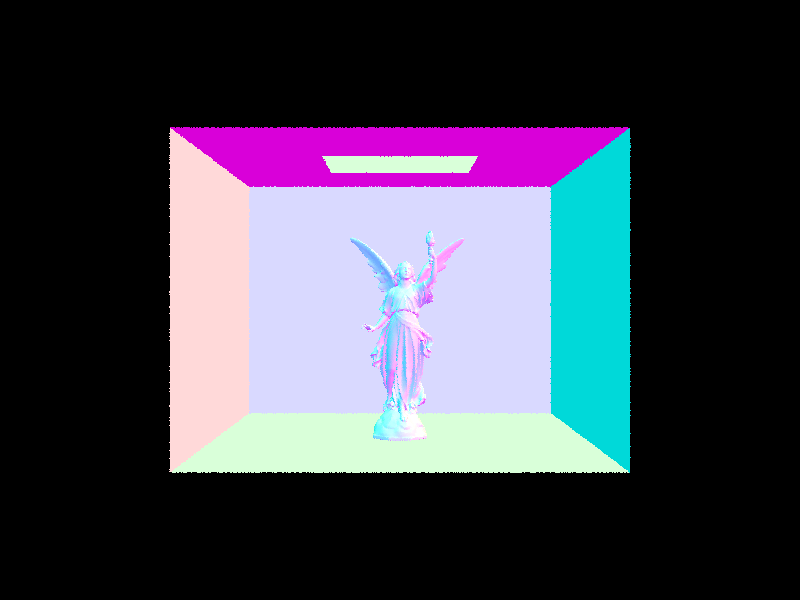 |
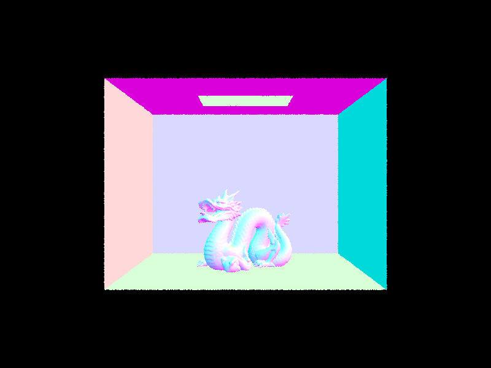 |
Rendering Time Comparison
| File | Without BVH Acceleration (seconds) | With BVH Acceleration (seconds) |
| keenan/banana.dae | 7.0615 | 0.0574 |
| meshedit/cow.dae | 16.9239 | 0.1109 |
| sky/bench.dae | 223.6116 | 0.0534 |
It is clear from the timing results above that BVH acceleration greatly improves render time.
It appears that accelerated rendering times can be done in a few milliseconds compared to the seconds or
even minutes it takes unaccelerated. An interesting note is that sky/bench.dae appears to
render faster than meshedit/cow.dae with acceleration, even though it was the opposite without
acceleration. This is likely a result of the geometry in each scene and the BVH that is produced from it.
meshedit/cow.dae has a more complicated shape but less primitives, while sky/bench.dae
has a relatively simpler shape but more than 10x the number of primitives. Since pre-acceleration involved iterating
through all the primitives, it makes sense for meshedit/cow.dae to render faster with less primitives.
However, acceleration using BVH, and meshedit/cow.dae would result in a more complicated BVH than
sky/bench.dae, so it makes sense that on average sky/bench.dae renders faster with acceleration.
Part 3: Direct Illumination
Direct Lighting with Uniform Hemisphere Sampling
The starter code gives us the ray r and the intersection at the hit point isect as parameters.
We are also given two change of basis matrices o2w and w2o
to switch between object and world space. On top of that, we are provided the hit point as hit_p
and the outgoing direction w_out which points toward the source of our ray. Lastly,
we also have the number of samples num_samples and the outgoing radiance L_out (initialized as zero vector).
The goal is to find the L_out using uniform hemisphere sampling.
We can use the Monte Carlo estimator for the Reflection Equation to solve for the reflected (outgoing) radiance. We will be sampling \(N\) directions to perform our estimation. We can represent these sampled directions as \(\omega_i\). However, since we are uniformly sampling a hemisphere, the probability \(P(\omega_i)\) of any sample is \(\frac{1}{2\pi}\). Therefore, our estimator can be represented as: $$ L_{o} = \frac{1}{N}\sum_{{i}=1}^N\frac{f_o(p, \omega_i \rightarrow \omega_o)L_{i}(p, \omega_i)\cos\theta_i}{P(\omega_i)} = \frac{2\pi}{N}\sum_{{i}=1}^Nf_o(p, \omega_i \rightarrow \omega_o)L_{i}(p, \omega_i)\cos\theta_i $$
To calculate using the estimator above, I first evaluate the summed term, which involves the following steps,
repeated num_samples times:
-
Obtain a sample from the
hemisphereSamplerto represent the sampled incoming direction \(\omega_i\) in local space. -
Initialize the incoming ray starting at the hit point
hit_pand going in the direction of \(w_i\). Since the ray is defined in world space, we do a change of basis on \(w_i\) using the matrixo2w. We also set the ray'smin_ttoEPS_Fto avoid numerical precision issues. -
Check if the incoming ray intersects anything. We will populate the Intersection struct
light_isectto check what object was hit. -
In the case that the ray hits something, we can calculate the summation term as follows:
-
\(f_o(p, \omega_i \rightarrow \omega_o)\):
We can use
isectto obtain the BSDF at the hit point and from there obtain the result offonw_outand \(\omega_i\). -
\(L_{i}(p, \omega_i)\):
From the
light_isectstruct, we can get the emission from the BSDF. If the emission is zero, the entire summation term will be zeroed out as well for this sample. If the emission is non-zero, it can be used as the incoming radiance since this is one bounce. -
\(\cos\theta_i\):
We can use the normal unit vector at the hit point (given by
isect) and the incoming (unit) direction \(\omega_i\) to obtain the cosine by getting their dot product. Note that since the normal is in world space, we change the basis of \(\omega_i\) usingo2wbefore getting the dot product of their unit vectors.
-
\(f_o(p, \omega_i \rightarrow \omega_o)\):
We can use
-
Now that we have the summation term for this sample, we can add it to
L_out.
After getting the whole summation (currently stored in L_out), we multiply it by the last
term \(\frac{2\pi}{N}\), with \(N\) being num_samples, to obtain the final L_out
which we return.
Direct Lighting by Importance Sampling Lights
For the implementation using importance sampling, we are given the same starter code variables provided except
for num_samples.
The goal for this implementation is to instead obtain the Monte Carlo estimate of every light in the scene and sum it up. Since the sampling is non-uniform, we'll use the original Monte Carlo estimator. To implement this, we do the following for each light:
- Check if the light is a point light. If so, we will only use
1 sample as opposed to
ns_area_lightsamples for this light. -
Calculate the summation term of the Monte Carlo estimate. This is similar in structure to
the uniform hemisphere sampling implementation with some changes:
-
We use the light's
sample_Lmethod to obtain \(\omega_i\), probability \(P(\omega_i)\), distance between the hit point and lightdistToLight, and the emission of the light (which is the incoming radiance in our summation term). Note that \(\omega_i\) is in world space. - We check if the light is behind the intersected surface using the dot product of the surface's normal unit vector and \(\omega_i\)'s unit vector. We skip casting the ray for this sample if the dot product is less than or equal to zero.
-
Our incoming ray that we intilialize also has a
max_tsuch that the incoming ray does not intersect the light. Specifically, we calculate it using \(\frac{distToLight - EPS\_F}{\text{norm of incoming ray's direction}}\). - We check if the incoming ray does not intersect anything if we want to include the sample in our summation. This is because we are using it as a shadow ray. If the ray intersects, there's an object blocking the light.
- Each summation term needs to be divided by probability \(P(\omega_i)\) since we use the original estimator.
-
We use the light's
-
After we get the summation for this light, we apply the last term \(\frac{1}{N}\).
Finally, we add it to
L_out.
After all the previous steps, L_out represents the sum of all Monte Carlo estimates for each light in the scene.
This is the value we return.
|
|
|
|
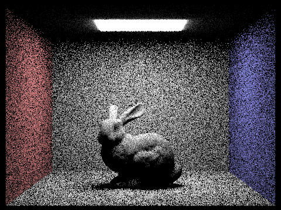 |
|
|
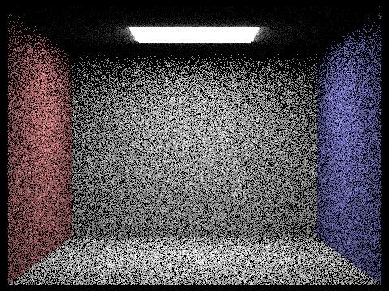 |
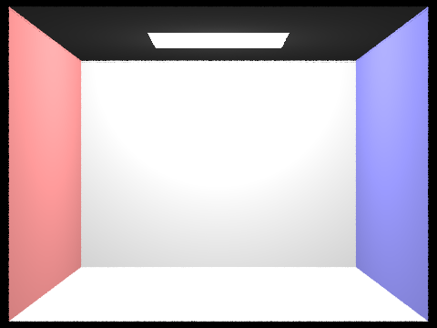 |

|
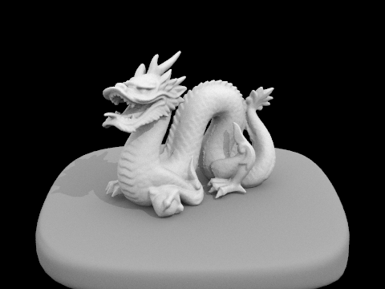 |
Comparing both sampling methods, we see clearly how importance sampling achieves a better result with the same settings compared to uniform hemisphere sampling. This is explained by the fact that importance sampling tries to focus light rays towards lights to ensure we actually consider sources of radiance compared to uniform hemisphere sampling, which samples in any direction, even if most of it is towards no source of and has no effect on the lighting of the current area. This fact also makes point lights a difficult thing since the likelihood of sampling the only direction that hits a point light is \(\frac{1}{2\pi}\). Since importance sampling can direct to the point light, we can see the result compared to uniform hemisphere sampling which very rarely includes this source of radiance.
|
|
|
|
|
|
We can see that as we increase the number of light rays, the soft shadows go from harsh static to a smooth gradient. Since we are at a point in the shadow where some light is still coming through, the shadow should be lighter. However, with fewer light rays, we are more likely to see all the light rays hit the object causing the shadow, resulting in a stronger shadow at that pixel. With more light rays, we'll likely see some of those rays reach the light and soften the shadow as a result.
Part 4: Global Illumination
Indirect Lighting Implementation
After making adjustments to support indirect lighting, such as by calling at_least_one_bounce_radiance
in the est_radiance_global_illumination function, I implemented the indirect lighting function,
at_least_one_bounce_radiance, as follows:
- Check if the given ray has a depth greater than zero. If not, we return zero radiance.
-
We set
L_outto be the result ofone_bounce_radiance, which is our direct lighting at this depth. -
Sample the BSDF of the given intersection point to obtain our incident direction and its probability.
As a bonus, we are also given the reflectance from sampling (using
sample_f). -
Intialize the ray that we will send out towards the incident direction from our intersection point.
I converted the incident direction from local to world space first and also made sure to set
min_ttoEPS_Fto avoid numerical precision issues. Additionally, we make this ray have a depth one less than the given ray to signify that we have "bounced". -
Check if the ray intersects the scene and populate an Intersection struct if so. If no intersection occurs, we
return whatever
L_outcurrently is. -
In the case we have an intersection, we perform Russian Roulette to decide whether to return
L_outinstead of recursively raytracing. I chose a probability of0.4for continuing and use thecoin_flipto check. -
At this point, we start (or continue) recursively raytracing by calling
at_least_one_bounce_radianceon our new ray and Intersection struct. We take the result of this recursive call and do a Monte Carlo estimate with it by multiplying it with the reflectance of the current intersection point and the cosine of the incidence angle (computed using the dot product as described in earlier sections). We divide this by the probability of the sampled direction and then divide again by the probability of continuing,0.4. The final calculation is added directly toL_out.- Note: We do not need to normalize since we only sampled one direction, which would mean dividing the "sum" by 1.
-
Return
L_outat the very end, which is the global illumination (not including the zero bounce).
Accumulating Bounces
In order to enable and disable accumulating bounces, I also made the following changes to the implementation before:
-
I added a check in
est_radiance_global_illuminationsuch that ifisAccumBouncesistrueor the ray depth is zero, we use zero bounce + at least one bounce just like before. Iffalse, we only use at_least_one_bounce_radiance. -
When setting
L_outto one bounce radiance, if we are not accumulating bounces we will instead setL_outto zero radiance since we do not want to return direct light until the last bounce. -
We add the Monte Carlo estimate of the next bounce to
L_outifisAccumBounces, otherwise we directly return the estimate. If the next bounce's ray has a depth of zero, we instead return the one bounce radiance to start unwinding the recursion and simulating the radiance decreasing after each bounce.
isAccumBounces is false, the changes cause the functions to return
the radiance from the light to the camera after \(m\) bounces, where \(m\) is the max ray depth.
This does not accumulate the direct lighting at each bounce.
|
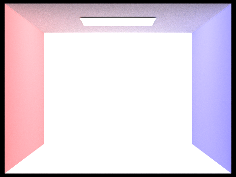 |
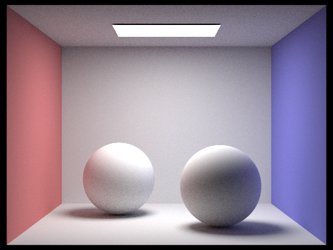 |
|
Note: sky/CBempty.dae uses a very strong point light in the middle of the room.
Direct vs. Indirect Lighting
|
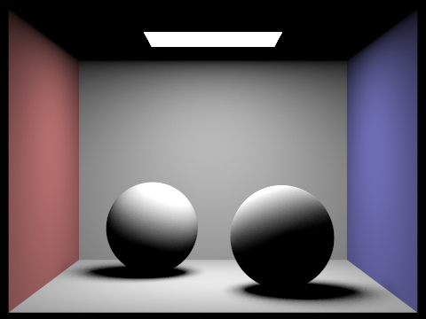 |
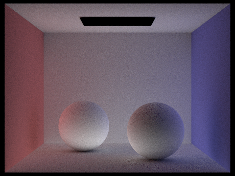 |
Comparing direct and indirect lighting, we can see how direct lighting handles most of the lighting that is directly visible to the light. However, it cannot light certain areas directly out of view from the light, such as shadows and the ceiling that the light is on. We can see with the indirect lighting how it is able to light these specific areas. On top of that, it also adds the effect of the light bouncing off the colored walls and that color appearing on the objects.
Accumulated vs. Unaccumulated Lighting
| isAccumBounces | m=0 | m=1 | m=2 | m=3 | m=4 | m=5 |
|---|---|---|---|---|---|---|
| false | 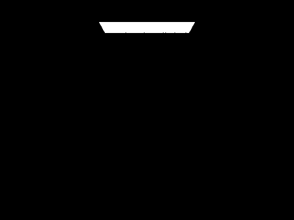 |
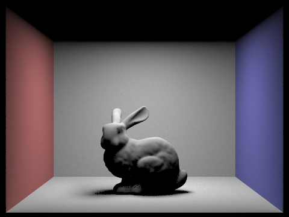 |
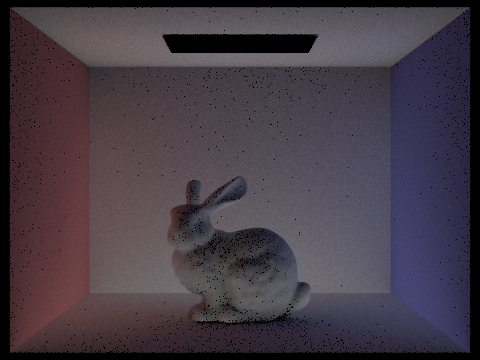 |
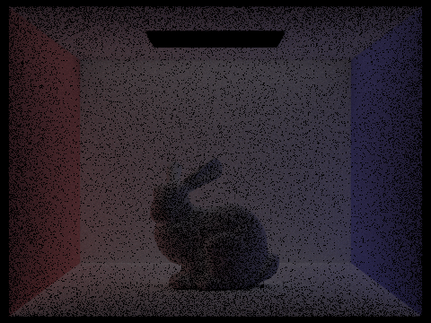 |
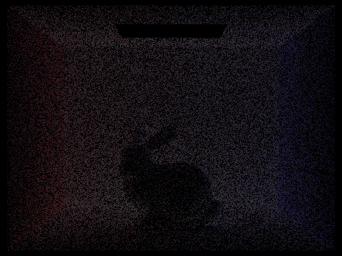 |
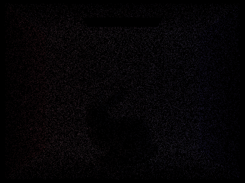 |
| true | 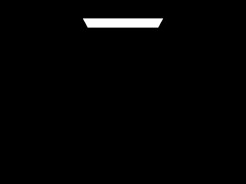 |
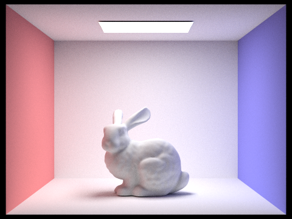 |
In the second and third bounces, we can observe that there is more lighting in the dark areas of the first bounce. The ceiling is now visible and some of the color from the walls is seen on the surrounding areas. The overall effect when seen in the accumulated image is that shadows are less harsh and the overall image appears slightly brighter than before, with areas such as ceiling now visible. In general, the accumulated images appear brighter and brighter (although the amount this brightness increases slows down) while unaccumulated images appear darker and darker.
Russian Roulette Rendering
| m=0 | m=1 | m=2 | m=3 | m=4 | m=100 |
|---|---|---|---|---|---|
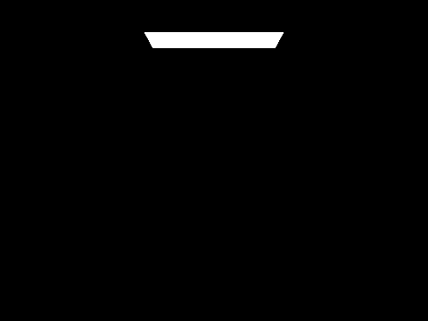 |
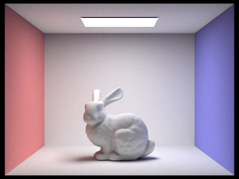 |
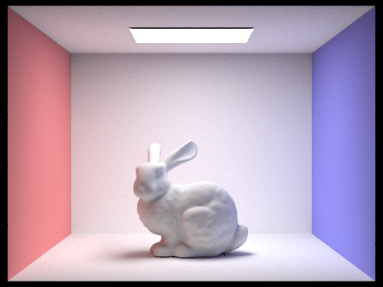 |
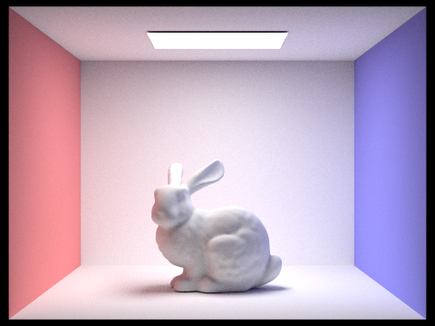 |
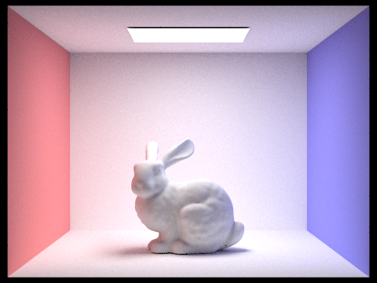 |
Various Sample-per-Pixel Rates
| s=1 | s=2 | s=4 | s=8 | s=16 | s=64 | s=1024 |
|---|---|---|---|---|---|---|
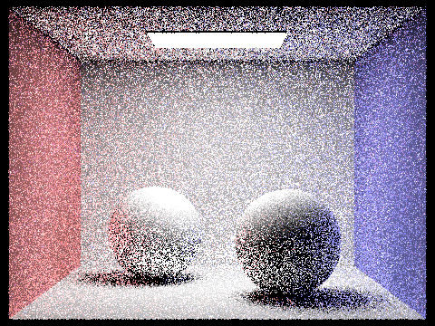 |
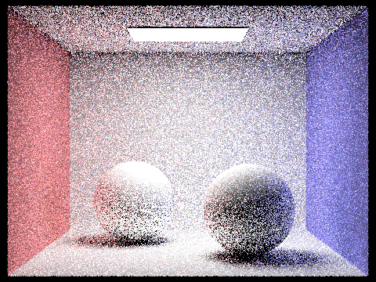 |
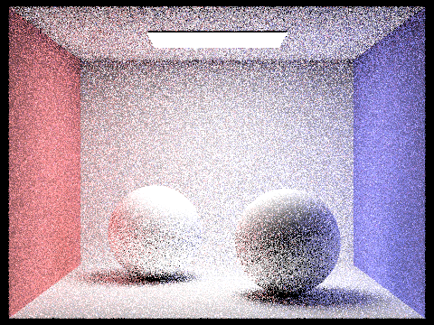 |
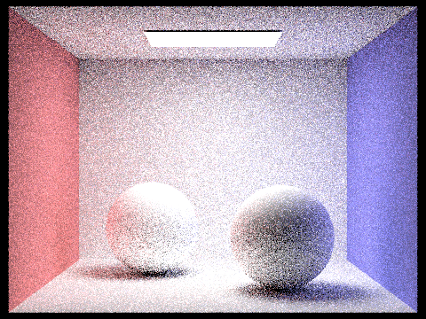 |
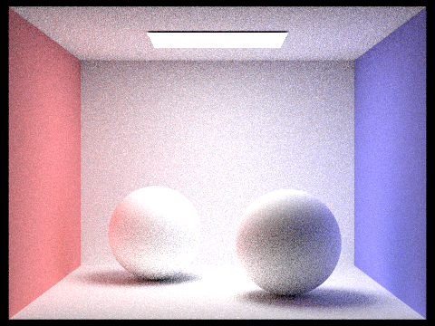 |
The notable observation here is that as the number of samples per pixel increases, the noise in the output render becomes less and less noticeable.
Part 5: Adaptive Sampling
Implementing Adaptive Sampling
The main idea behind adaptive sampling is that we only need more samples on pixels that need it (a.k.a. pixels that end up with more noise). We can measure how much a pixel converges to a color by using: $$I = 1.96 \cdot \frac{\sigma}{\sqrt{n}}$$ where \(\sigma\) is the standard deviation of the pixel's illumination and \(n\) is the number of samples used for that pixel. In terms of variance \(\sigma^2\), we can use the equation: $$I = 1.96 \cdot \sqrt{\frac{\sigma^2}{n}}$$
From the equation, we would like \(I\) to be small since that would mean either variance is small or a lot of samples were used which both mean less noise. If \(I \leq maxTolerance \cdot \mu\), where \(maxTolerance\) is \(0.05\) and \(\mu\) is the mean of the pixel's illumination, we can say with 95% confidence that the average illumination is between \(\mu - I\) and \(\mu + I\). When this condition is satisfied, we can assume the pixel has converged and stop sampling.
To implement this, I restructured raytrace_pixel so that
it uses a while loop that ends when the number of samples reaches ns_aa,
the maximum number of samples per pixel. In addition, I added variables s1
and s2 to track the summation of each sample's illuminance, such that:
$$s_1 = \sum_{k=1}^n{x_k} \quad \text{and} \quad s_2 = \sum_{k=1}^n{x_k^2}$$
We use these for our termination statement, which for every samplesPerBatch
samples (excluding 0), we calculate the mean \(\mu = \frac{s_1}{n}\) and variance
\(\sigma = \frac{1}{n-1} \cdot (s_2 - \frac{s_1^2}{n})\) to compute \(I\)
and check whether \(I \leq maxTolerance \cdot \mu\). If this is true, we break
the while loop and update the sampleCountBuffer with the number of samples used
and calculate everything else afterwards as normal.
| rendered output | sample rate |
|
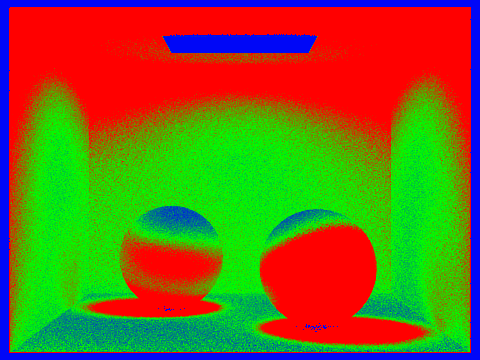 |
|
|
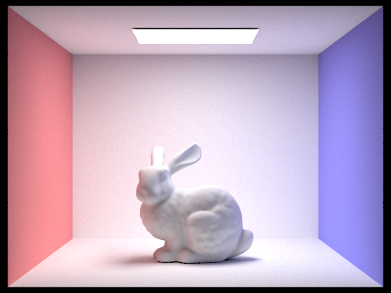 |
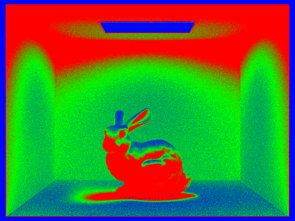 |